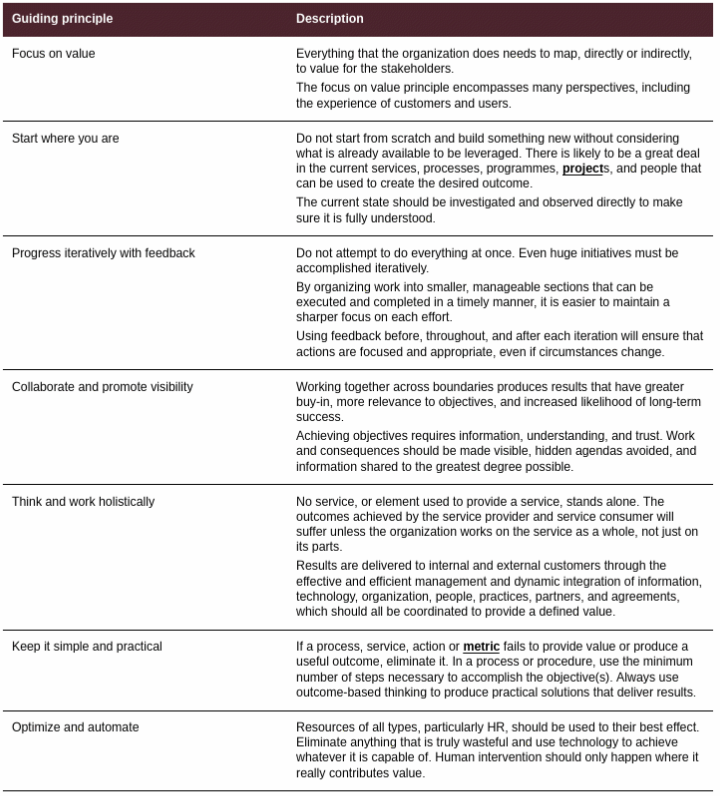

D336 ITIL
Dion Training practice exams
CyberVista
7,6,2,1 are the order of the most important chapters
Service Value System
What describes.. is a question that leads to the SVS
- Service Value Chain: flexible model for the creation, delivery, and
continual improvement of services
- Is the departments or people in an organization
Key Concepts of Service Management
-
1.1 Recall definition of:
- Service: facilitates outcomes for customer with limited cost to them
- The means of enabling value co-creation by facilitating outcomes that customers want to achieve without the customer having to manage specific costs and risks.
- Utility: What the service does
- Warranty: How the service performs
- Customer: Person who defines requirement for service
- User: End user of services
- Service Management: Set of specialized organizational capabilities for enabling value to customers in the form of services. (Like Microsoft providing email or drive for a company)
- Sponsor: Person who authorizes budget for service
- Service: facilitates outcomes for customer with limited cost to them
-
1.2 Describe key concepts of creating value with services:
- Cost: Amount spent
- Value: PERCEIVED benefits, usefulness, or importance
- Organization: Person or group with its own functions
- Outcome: Result for stakeholder (The outcome of the output below is that emails are sent and communication is enhanced)
- Output: Deliverable of an activity (You are given a product, like email service)
- Risk: Possibile events that could cause harm or loss
- Utility: Functionality to meet a need (An airconditioner will cool 5,000sqf)
- Warranty: Assurance that requirements will be met (The airconditioner is lowering the temp in a 4,000 sqf room)
-
1.3 Describe key concepts of service relationship:
- Service offering (The offer of the provision)
- A formal description of one or more services, designed to address the needs of a target consumer group. Aservice offering may include goods, access to resources, and service actions.
- Service relationship management (Usually the negotiations of all this)
- Service provision (The person offering)
- Service consumption (Who is receiving the offer)
- Service offering (The offer of the provision)

-
Guiding principles:
- create the organization's culture
- Comman principles across organization
-
Governance
- organization align operations with stategic direction
Four dimensions of Sevice Management:
- Organizations and people
- Information and technology
- partners and suppliers
- value streams and processes
Value: the percieved benefits, usefulness, and importance of something
- Values is subject to perception of the stakeholders
Value co-creation
Mono-directional: a provider delivers the service without involvement of the consumer on the creation of the service
Stake holders and consumers need to provide feedback to help build the service
Stakeholders involved in value co-creation:
- Organization
Service Consumption involves:
- Customer: role that defines the requirements for a service and takes
responsibility for the outcomes of service consumption. The person negotiating the contract.
- Users: the person using the service from the contract
- Sponsors

Services: A means of enabling value co-creationg by facilitation outcomes that customers
want to achieve, without the customer having to manage specific costs and risks.
Product: A configuration of an organization's resources designed to offer
value for a customer.
Service offerings are a specific mix of services and products sold ot a specific customer.
Service offerings can be under the control of:
- Prividers gives control to consumer (Goods)
- (Access to resources) Provider keeps control of service, but grants access to consumer
- Service actions performed to address needs of consumer on demand ( customer service, patch updates, for a good that was purchased)

Service Relationships
Service relationships are established between two or more organizations to co-create value. In a service relationship, organizations will take on the orles of service providers or service consumers. The two roles are not mutually exclusive, and organizations typically both provide and consume a number of services at any given time.
Service Relationship: A cooperation between a service provider and service
consumer. Service relationships include service provision, service consumption, and
service relationship management.
Service provision: Activities performed by an organization to provide services.
- management of the provider's resources, configured to deliver the service
- ensuring access to these resources for users
- fulfillment of the agreed service actions
- service level management and continual improvement
- may also include the suppling of goods
Service consumption: Activities performed by and organization to consume services.
- management of the consumer's resources needed to use the service
- service actions performed by users, including utilizing the provider's resources, and
requesting service actions to be fulfilled
- may also include the receiving of goods
Service relationship management: Joint activities performed by a service provider
and a service consumer to ensure continual value co-creation based on agreed and
available service offerings.
Value: outcomes, costs, risks
The resources needed to provide services have cost. This equates to risk.
Output: A tangible or intangible deliverable of an activity.
Outcome: A result for a stakeholder enabled by one or more outputs.
BRM (Business Relationship Manager):
Two types of costs from a consumer's perspective in service relationship:
- cost removed from consumer by service
- Cost imposed on the consumer by service
Risk: a possible event that could cause harm or loss, or make it more difficult
to achieve objectives. Can also be defined as uncertainty of outcome, and can
be used in the context of measuring the probability of positive outcomes as well as
negative outcomes.
- Risks removed from consumer by teh service
- Risks imposed on the consumer by the service
The provider manages the detailed level of risk on behalf of the consumer.
The consumer contributes to the reduction of risk through:
- Actively participating in the definition of the requirements of the service
- clear communication of the critical success factors (CSF) and constraints
- ensuring the provider has access tot he necessary resources
Utility and Warranty
Utility and Warranty ensure consumers get their expected outcome.
Utility: the functionality offered by a product or service to meet a particular
need. Utility can be summarized as 'what the servie does' and can be used to
determine whether a service is 'fit for urpose'. To have utility, a service must either
support the performance of the consumer or remove constraints from the consumer.
Many services do both.
Warranty: assurance that a product or service will meet agreed requirements.
Warranty can be summarixed as 'how the service performs' and can be used to
determine whether a service is 'fit for use'. Warranty often relates to service levels
aligned with the needs of service consumers. This may be based on a formal agreement, or it
may be marketing message or brand image. Warranty typically addresses such areas as
the availability of the service, its capacity, levels of security and continuity.
A service may be said to provide acceptable assurance, or 'warranty', if all defined
and agreed conditions are met.
These two equal expected value
Utility is getting from point A to point B.
Warranty is HOW to get from point A to point B.
Video 2
ITIL 7 Guiding Principles
Allows organizations to integrate them into an overall approach to service management.
Engourage and support organizations in continual improvement.
Use the principles that are relevant to the situation.
- Focus on Value
- all activities conducted by an organization should link back - directly or indirectly - to value for its customers, for its stakeholders, and for the organization itself.
- What gives the most customer satisfaction
- What brings customers back to you
- Start where you are
- consider what is already available instead of starting from scratch
- Progress iteratively with feedback
- break down the work into manageable components that can be executed iteratively to accomplish the objective
- Collaborate and promote visibility
- efforts benefit from better buy-in
- better information is available for decision making
- Creative solutions, enthusiastic contributions, and important perspectives
- Involve the right people at the right time and gather factual data to make the right decisions.
can be obtained from unexpected sources - inclusion is generally a better policay than exclusion
- Think and work holistically
- no service, practice process, department, or supplier stands alone
- Think as a whole
- Keep it simple and practical
- use the minimum number of steps necessary to accomplish an objective
- Optimize and automate
- organizations should streamline activities and automate work, so that minimal human intervention is required.
Four dimensions of service management:
VOIP, like voice over ip
1. Organizations and people
2. Information and technology
3. Partners and suppliers
4. Value streams and processes

Partners and Suppliers
Factors that may influence an organization's stategy when using suppliers:
- Stategic focus: may outsource non-core supporting functions
- Corporate culture: longstanding cultural bias
- Resource scacity:
- Cost concern:
- Subject matter expertise:
- External constraints:
- Demand patterns:
Value Streams and Processes
- A value stream is a series of steps undertaken by and organization to create and deliver products and services to consumers. It's implemented as a combination of the organization's value chain activities.
- A process descibes what is done to accomplish an objective. Inputs into outputs.
- Activities the organization undertakes
Service value chain: converts demand into value, can be used for mapping value streams
- Plan: ensures shared understanding of vision, current status and direction
- Improve: continual improvment of products and services
- Engage: understand stakeholder needs and demands
- Design and Transition: make sure that services meet stakeholder needs
- Obtain/Build: ensure components are available when needed
- Deliver and Support: ensure sla comform service delivery

External factors (PESTLE)
- Political
- Economic
- Social
- Technological
- Legal
- Environmental
Organizations and People
- Roles and responsibilities
- Formal organizational structure
- Culture
- Staffing and competencies
Information and Technology
- Information created, managed, and used in the course of service provision and consumption
- Technologies that support and enable that service
Partners and Suppliers
- Some organizations might believe they can be best served by focusing their attention on developing core competencies, using partners and suppliers to provide other needs.
- Other organizations might rely on their own resources, thus using partners and suppliers as little as necessary. Both these approaches represent extremes.
Service Value Chain (SVC)
- It is an operating model
- Outlines activities needed to transform demand into value
- Universally applicable
- Can be used for mapping value streams
- practices include specific sequences of SVC activities
Value chain activity (persons and departments): PIE-DOD
- Plan
- Imporve
- Engage
- Design and Transition
- Obtain/Build
- Deliver and Support
Engage (Sales representative)
Provide a good understanding of relationships with all stakeholders.
Key inputs to the Engage Activity:
- A product and service portfolio provided by plan
- High-level demand for services and products provided by internal and external customers
- Detailed requirements for services and products provided by customers
- Request and feedback from customers
- Incidents, service requests, and feedback from users
- Information on the completion of user support tasks from deliver and support
- Marketing opportunities from current and potential customers and users
- Cooperation opportunities and feedback provided by partners and suppliers
- Contract and agreement requirements from all value chain activities
- Knowledge and information about new and changed products and services from design
and trasition and objtain/build
- Knowledge and information about third-party service components from suppliers and partners
- Product and service performance information from deliver and support
Key outputs of the Engage activity:
- Consolidated demands and opportunities for plan
- Product and service requirements for design and transition
- User support tasks for delivery and support
- Improvement opportunities and stakeholders feedback for improve
- Change or project initiation requests for obtain/build
- Contracts and agreements with external and internal suppliers and partners for design and transition
and obtain/build
- Knowledge and information about third-party service components for all value chain activities
- Service performance reports for customers
Plan
Shared understanding of the vision
Key inputs to the plan activity are:
- Policies, requirements, and constraints provided by the organization's governing body
- Consolidated demands and opportunities provided by Engage
- Value chain performance information, improvement status reports, and improvement initiatieves
from Improve
- Knowledge and information about new and changed products and services from Design and Transition, and Obtain/Build
- Knowledge and information about third-party service components from Engage
Key outputs to the plan activity:
- Stategic, tactical, and operational plans
- Portfolio decisions for Design and Transition
- Architectures and policies for Design and Transition
- Improvement opportunities for Improve
- A product and service portfolio for Engage
- Contract and agreement requirements for Engage
Obtain/Build (Goes out and procures stuff)
Service components are available when and where they are needed and that they meet
agreed specifications.
The key inputs to the Obtain/Build activity are:
- Architectures an policies provided by Plan
- Contracts and agreements with external and internal suppliers and pertners provided
by engage
- Goods and services provided by external and internal suppliers and partners
- Requirements and specifications provided by Design and Transition
- Improvement initiatives provided by Improve
- Improvement status reports from Improve
- Change requests provided by Deliver and Support
- Knowledge and Information about new and changed products and services from Desing and Transition
- Knowledge and Information about third-party service components from Engage
The key Outputs:
- Service components for Deliver and Suppoert
- Service components for Design and Transition
- Knowledge and Information about new and changed service components to all value chain activities
- Contract and agreement requirement for Engage
- Performance information and improvement opportunities for Improve
Design and Transition (The developers)
Products and services meet expectations for quality, costs, and time to market.
Key inputs:
- Portfolio decisions provided by Plan
- Architectures and policies provided by Plan
- Product ans service requirements provided by Engage
- Improvement initiatives provided by Improve
- Improvement status reports from Improve
- Service performance information provided b Deliver and Support and Improve
- Service components from Obtain/Build
- Knowledge and information About third-party service components from Engage
- Knowledge and information about new and changed products and services from Obtain/Build
- Contract and agreements with external and internal suppliers and partners provided
by Engage
Key outputs:
- Requirements and specifications for Obtain/Build
- Contract and agreement requirements for Engage
- New and changed products and services for Deliver and Support
- Knowledge and information about new and changed products and services to all value
chain activities
- Performance information and improvement opportunities for Improve
Improve
Continual improvement of products, services, and practices
Key inputs:
- Product and service performance information provided by Deliver and Support
- Stakeholders' feedback provided by Engage
- Performance information and improvement opportunities provided by all value chain activities
- Knowledge and information about new and changed products and services from Design and Transition and Obtain/Build
- Knowledge and information about third-party service components from Engage
Key outputs:
- Improvement initiatives for all chain activities
- Value chain performance information for Plan and governing body
- Improvement status reports for all value chain activities
- Contract and agreement requirements for Engage
- Service performance information for Design and Transition
Service Value System
Service Value System (SVS): Describes how all the components and activities of the organization work together as a system to enable value co-creation
-
Require integration and coordination of activities, practices, teams, authorities, and responsibilities.
-
Ensures continued co-create value
-
Engage: All incoming and outgoing interactions
- All new resources are obtained through the obtain/build activity
- Planning at all levels is performed via Plan activity
Continual Improvement
Align the organization's practices and services with changing business needs through the ongoing indentification and improvement of services, service components, practices, or any element involved in the efficient and effective management of products and services.
Practices
Practice: set of organized resources designed for performing work or accomplishing and objective
There are 34 of them, divided into 3 categories.
- General Management. (14 practices) General management practices have been adapted
from wider business domain.
- Architecture management
- Continual improvement
- Information security
- Knowledge management
- Measurement and reporting
- Organization change management
- Portfolio management
- Project management
- Relationship management
- Risk management
- Service financial management
- Strategy management
- Supplier management
- Workforce and talent management
- Service Management. (17 practices) Service management practices have been created/adapted
from the service management industry.
- Availability management
- Business analysis
- Capacity and performance management
- Change enablement
- Incident management
- IT asset management
- Monitoring and event management
- Problem management
- Release management
- Service catalog management
- Service configuration management
- Service continuity management
- Service design
- Service desk
- Service level management
- Service request management
- Service valication and testing
- Technical Management. (3 practices) Technical functions which have been elevated to the
level of a service.
- Deployment Management
- Infrastructure and Platform Management
- Software Development and Management
Key inputs to the SVS are opportunity and demand.
Opportunity represent options or ppossibilities to add value for stakeholders or
otherwise improve the organization.
Demand is the need or desire for products and services among internal and external consumers.
Guiding Principles: Recommendations that can guide an organization in all circumstances, regardless of changes in its goals, stategeries, type of work, or management structure.
Governance: The means by which an organization is directed and controlled.
Service value chain: A set of interconnected activities that an organization performs to deliver a valuable product or service to its consumers and to facilitate value realization.
Practices: Sets of oranizational resources designed for performing work or accomplishing an objective.
Continual improvement: A recurring organizational activity performed at all levels to ensure that an organization's performance continually meets stakeholders' expectations. ITIL 4 supports continual improvement with the ITIL continual Improvement model.
Organizational Silos: prevent easy access to information, resistant to change
Organizational resilience: thrive in changing external circumstances. anticipate, prepare for,
respond to changes and sudden disruptions.
Organizational agility: move and adapt quickly
- Opportunity and demand trigger activities within SVS, lead to creation of value
Opportunity: options or posibilities to add value for stakeholders.
Demand: need or desire for service.
Guiding Principles:

Focus on value
Agile and ITIL together:
- streamlining practices such as change enablement
- establishing procedures to incorporate and prioritize the management of unplanned interruptions (incidents), and to investigate the causes of failure.
- separating interactions, if necessary, between systems of record (configuration management database), needed to manage services from system of engagement (collaboration tools) used by software development teams.
DevOps: builds on agile, close collaboration between developement and technical
operations, use automation to free up time of skilled professionals to focus on
value-adding activities. Combines Agile for software development, ITIL for
value co-creation, improving the way value is generated with LEAN.
- creating fast feedback loops
- Streamlining value chain activities and value streams so that demand for work
can be quickly converted to value for multiple stakeholders.
- differentiating deployment management from release management
- advocating a 'system view' that emphasizes close collaboration between enterprise
governance, service teams, software development, and technology operations.
Customer experience (CX) is both objective and subjective.
Applying principles for achieving Focus on Value:
- Know how service consumers use each service
- Encourage a focus on value among all staff
- Focus on value during normal operational activities as well as during improvment
initiatives
- Include focus on value in every step of any improvement initiative
Start Where you are
The role of measurement:
When a measurement becomes a target, it ceases to be a good measure, Goodhart's Law
Progress interatively with feedback
Benefits of Iteration and feedback together:
- greater flexibility
- faster responses to customer and business needs
- the ability to discover and respond to failure
- overall improvement in quality
To apply this principle:
- Comprehend the whole, but do something. Don't fall to 'analysis paralysis'
- The ecosystem is constantly changing, so feedback is essential
- Fast does not mean incomplete
Collablorate and promote visibility
Discuss important issues/tasks, not talking about them can appear that they are not
important.
Critical analysis of:
- understanding flow of work in progress
- identifying bottlenecks, as well as excess capacity
- uncovering waste
Advice for this principle:
- collaboration does not mean consensus
- Communicate is a way the audience can hear
- Decisions can only be made on visible data
Think about work holistically
Applying this principle:
- Recognize the complexity of the systems
- Collaboration is key to thinking and working holistically
- Where possible, look for patterns in the needs of and interactions between
system elements
- Automation can facilitate working holistically
Keep it simple and practical
Always use the minimum steps to accomplish an objective.
Applying this value:
- Ensure value
- Simplicity is the ultimate sophistication
- Do fewer things, but do them better
- Respect the time of the people involved
- Easier to understand, more likely to adopt
- simplicity is the best route to achieving quick wins
Optimize and automate
Make something as effective and useful as it needs to be.
Steps to optimization:
- Understand and agree the context in which the proposed optimization exists.
- Assess the current state of the proposed optimization
- Agree what the future state and priorities of the organiztion should be, focusing
on simplification and value.
- Ensure the optimization has the appropriate level of stakeholder engagement and commitment.
- Execute the improvements in an iterative way.
- Continually monitor the impact of optimization.
Steps to automation:
- simplify and/or optimize before automating
- Define your metrics
- Use the other guiding principles when applying this one.
- Progress iteratively with feedback
- Keep it simple and practical
- Focus on value
- Start where you are
Videos
Continual Improvement
Ongoing improvement of products, services, and practices, or any element involved in management of products and services.
Continual Improvement Model:
- Provides approach for continual improvement
- Applies to SVS in its entirety
- Supports iterative approach
- Improvement efforts linked to organization's vision

Change Enablement
Maximize the number of successful changes through proper risk assessment and minimize
the negative impact of failed changes
Types:
- Standard: Pre-authorized, low risk, low cost, basically Service Request. No additional authorization.
- Normal: authorization depends on what kind of change it is. Goes through the normal
change workflow. Authorization based on change type.
- Emergency: needs rapid action. May have a separate change authority
Imporve: Many improvements will require changes to be made, and these should
be assessed and authorized in the same way as all other changes.
Design and transition: Many changes are initiated as a result of new or
changed services. Change control activity is a mahor contributor to transiton.
Obtain/build: Changes to components are subject to change control, whether
they are built in house or obtained from suppliers.
Deliver and Support: Changes may have an impact on delivery and support, and
information about changes must be communicated to personnel who carry out this value
chain activity. These people may also play a part in assessing and authorizing changes.
Incident Management
Minimize negative impact of incidents by restoring normal operation as soon as possible.
Incident: unplanned interruption or reduction of quality. Must be logged, prioritized
and managed through their lifecycle. Uses same categorization as Problem Tickets.
Swarming may help with complex issues. Normal is defined in the SLA.
Major Incidents: need a separate procedure. Swarming can be used for quicker
solutions.
Imporvement: Incident record are a key input to improvement activities, and are
prioritized both in terms of incident frequency and severity.
Engage: Incidents are visible to users, and significant incidents are also visible
to customers. Good incident management requires regular communication to understand
the issues, set expectations, provide status updates, and agree that the issue has
been resolved so the incident can be closed.
Design and transition: Incidents may occur in test environments, as well as
during service release and deployment. The practice ensures these incidents are resolved
in a timely and controlled manner.
Obtain/build: Incidents may occur in development environments. Incident management
practice ensures these incidents are resolved in a timely and controlled manner.
Deliver and support: Incident management makes a significant contribution to
support. THis value chain activity includes resolving incidents and problems.
Swarmming!!
Problem Management
Reduce likelihood of recurring incidents by identifying actual and potential causes of incidents, manages workarounds and known errors.
- Problem: unknown cause of one or more incidents
- Known Error: a problem with a known root cause but no solution yet
- Workaround: alternate solution, reducing the impact of the problem
Phases: problem identification => problem control => error control
Imporve: This is the main focus area for problem management. Effective problem
management provides the understanding needed to reduce the number of incidents and
the impact of incidents that can't be prevented.
Deliver and support: Problem management makes a significant contribution by
preventing incident repetition and supporting timely incident resolution.
Engage: Problems that have a significant impact on services will be visible to
customers and users. In some cases, customers may wish to be involved in problem
prioritization, and the status and plans for managing problems should be communicated.
Workarounds are often presented to users via a serviceportal.
Service Desk
Capture demand for incidents and service requests. Single point of contact between service provider and users.

SPOC: single point of contatct
A service desk:
- has a practical understanding of the wider, organization, the business processes, and the
users.
- have a major influence on the user experience and how the service provider is
perceived.
What services should a good service desk deliver:
- Add value by understanding and acting on the business actions
- Should provide empathetic and informed links between the service provider and its
users.
What skills should service desk staff have?
- exellent customer service skills
- empathy
- incident analysis and prioritization
- effective communication
- emotional intelligence
Engage: service desk is the main channel for tactical and operational engagement with users.
Deliver and support: The service desk is the coordination point for managing incidents and servic requests.
Design and transition: provides a channel for communicating with users about new
and changed services. Service desk staff participate in release planning, testing,
and early life support.
Improve: activities are constantly monitored and evaluated to support continula
improvement, alignment, and value creation. Feedback from users is collected by the
service desk to support continual improvement.
Service Level Management
To set clear business-based targets for service performance, so that the delivery of a service can be measured properly
- SLA: agreement between customer and service provider
- OLA(operational level agreements): agreement between different units of the same organization
- UC(Underpinning Contracts): agreement between service provider and external supplier
Recommendations:
- clear language, no jargon
- simply written, easy to understand
- Should relate to defined outcomes
- Listen actively to customer needs
Plan: supports planning of the product and service portfolio and service offerings
with information about the actual service performance and trends.
Engage: ensures ongoing engagement with customers and users through geedback processing
and continual service review.
Service Request Management
To support the agreed quality of services by handling all pre-defined, user-initiated service requests.
Service Request: a formal request for something other than incident resolution (information, advice, how-to questions)
Steps to fulfill requests should be well known (for both simple and complex requests)
When defining new workflows, try to reuse already existing ones.
User expectations must be managed in regards of what can be delivered
- Steps should be well known and proven, agree times for fulfillemnt, and provide clear communication of the status.
- Requests and their fulfilment should be standardized and automated to the greatest degree possible.
- Policies should be established regarding what service requests will be fulfilled with limited or even no additional approvals so that fulfilment can be streamlined.
- Expectations of users regarding times clearly set, based on what organiztion can realistically deliver.
- Opportunities for improvement identified and implemented to produce faster fulfillment times and benefit from automation.
Policies and workflows included for documenting and redirecting any requests submitted as service requests, but which should actually be managed as incidents or changes.
Request Examples:
- Report
- Toner cartridge
- Office hours
- Phone
- Laptop
- Access to files
- Feedback
- Compliments
Information Security Management
Protects information needed by organizations to conduct business.
Ensures appropriate levels of:
- Confidentiality
- Integrity
- Availability
- Authentication
- Non-repudiation
Protect the information needed by the organization to conduct its business. This
includes understanding and managing risks to the confidentiality, integrity, and
availability of information, as well as other spects of information security
such as authentication (ensuring someone is who they claim to be) and nonrepudiation
(ensuring that someone can't deny that they took an action).
- Prevention: ensuring security incidents do not occur
- Detection: Rapidly and reliably detecting incidents that can't be prevented
- Correction: Recovering from incidents after they are detected.
Relationship Management
Establishes and nurtures links between organizations and stakeholders at strategic and
tactical levels.
Makes sure we find the best possible ways to communicate and collaborate with different
internal and external stakeholders.
Relationships are identified => Analyzed => Monitored => Improved
Supplier Management
Ensures that suppliers of the organization and their performances are managed to support seamless service provision to customers.
The goal is to make sure "we get what we paid for" from our vendors and suppliers.
Agreements and contracts are made in the form of UCs (Underpinning Contracts).
Includes creating closer, more collaborative relationships with key suppliers to uncover and realize new value and reduce the risk of failure.
IT Asset Management
Assets that have monetary value.
Plans and manages the full lifecycle of IT assets to:
- Maxamize their value
- Control their costs
- Support decisions about reusing or purchasing new assets
IT Asset: any financially valuable component that can contribute to the delivery of IT products or services.
Monitoring & Event Management
Observes services and components and records changes in their state. Identifies those events, categorizes them and establishes standard responses.
Systematically observes services an service components. Records and reports selected changes
of state identified as events.
Identifies and prioritizes infrastructure, services, business processes, and
information security events. Establish the appropriate reponse to those events,
including to conditions that could lead to potential faults or incidents.
Event: any change of state that has a significance for the management of a configuration item or service.
Types: Informational, Warning, Exception
Release Management
Makes new and changed services and features available for use.
Release: a version of a service or other configuration items, or a collection of configuration items, that is made available for use.
Releases have been disconnected from deployments with canary/dark release
(Canary/dark release is pushing something to production, but not showing it to end users. Some sort of toggle exists for using it)
Service Configuration Management
Ensures accurate information is available when needed about services, configuration items and their relationships.
**Configuration Item (CI): any component that needs to be managed to deliver an IT service.
Configuration Management Database (CMDB): a database or collection of databases
holding CIs and their connections.
CMS (Configuration Management System): a frontend / user interface for CMDBs
Deployment Management
Moves new or changed hardware, software documentation or any other components from
one environment to the next.
Move to a live environment.
With the help of DevOps we can reach continuous delivery, where the developer
build the change in DEV, which is automatically tested and moved to the next environment
until it arrives in PROD. Deployment is not equal to Release.